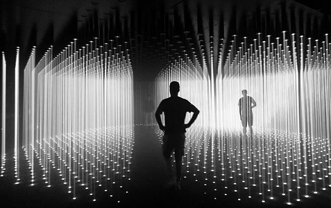
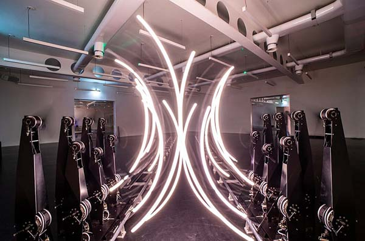
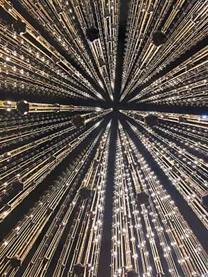
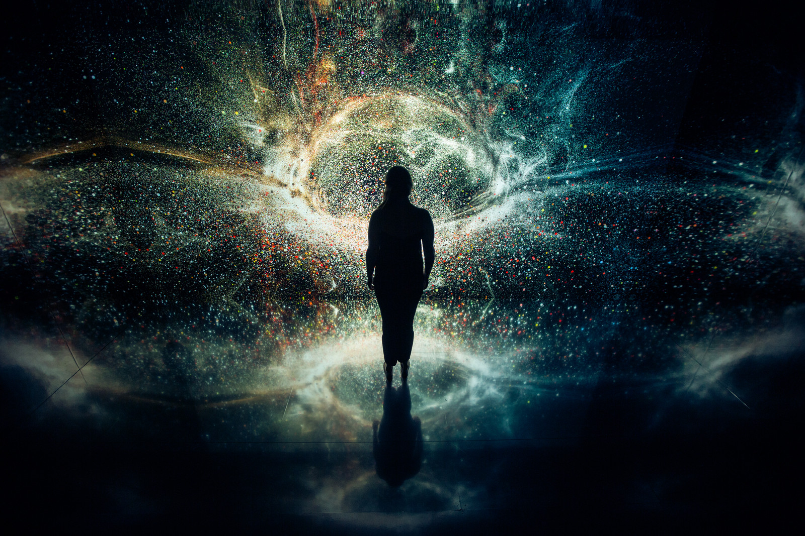

Het museum
Het eerste museum in Nederland dat zich volledig richt op mediakunst. Ontdek grootschalige, digitale kunstinstallaties die je blik verruimen en de zintuigen op scherp stellen. De kunst van morgen, vandaag.
  Nxt Museum is het eerste museum in Nederland dat zich volledig richt op mediakunst. We exposeren kunstwerken die gebruik maken van moderne technologieën van het heden en van de toekomst. Omdat kunst de tijdsgeest weerspiegelt, geloven wij dat de meest innovatieve kunst ons de mogelijkheid geeft om op de impact van technologische ontwikkelingen te reflecteren. Een moment van bezinning in een realiteit die alsmaar sneller doorontwikkelt.
Adres Nxt Museum Asterweg 22 1031HP Amsterdam maps
opennings tijden zo-di: 10:30-20:30 wo: 11:00-21:30 do-za: 10:30-22:30
reviews
4/5 Echt indrukwekkende digitale kunstinstallatie, geweldig als je wat truffels of een ander eetbaar gerecht hebt gegeten. De grote zalen zijn waar je wilt zijn en je zult hier een flinke hoeveelheid tijd doorbrengen. Reserveer je tickets van tevoren, want je moet op je telefoon gaan om online te boeken en het signaal is daar niet zo goed.
5/5 Een prachtige tentoonstelling met nieuwe media. Geschikt voor alle leeftijden. Wij gingen met een groep leerlingen van de bovenbouw middelbare school. Aandacht wordt vastgehouden. Veel interactie tussen de kijker en de kunst dmv lampen en beweging. Indrukwekkende projecties en interessante onderwerpen. Zeer aan te raden! (tijdsduur: Als je snel loopt ben je er in een half uur doorheen. Als je alles in je opneemt kan je er een uur over doen).